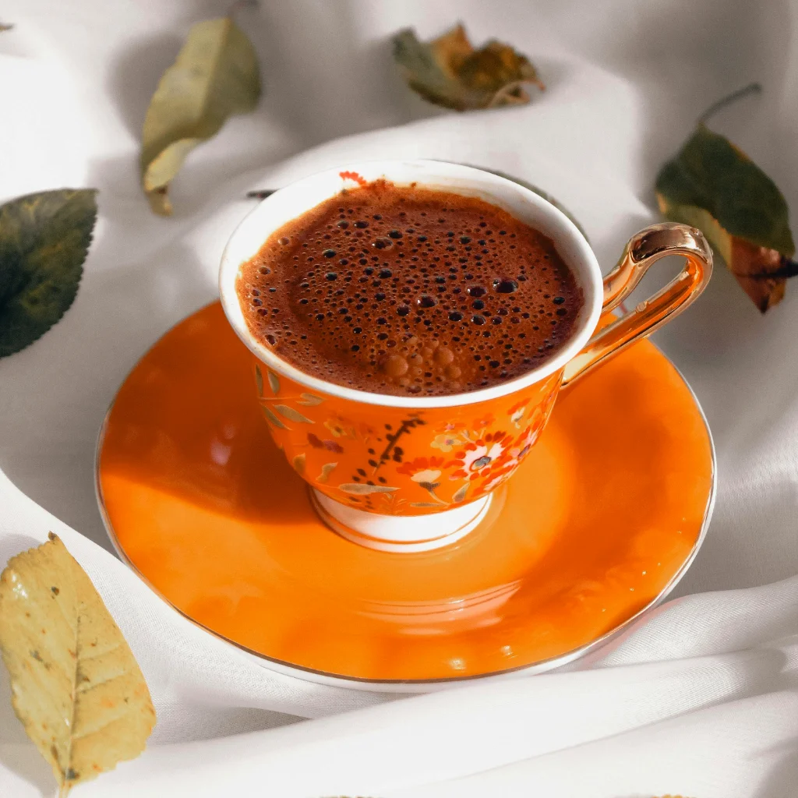
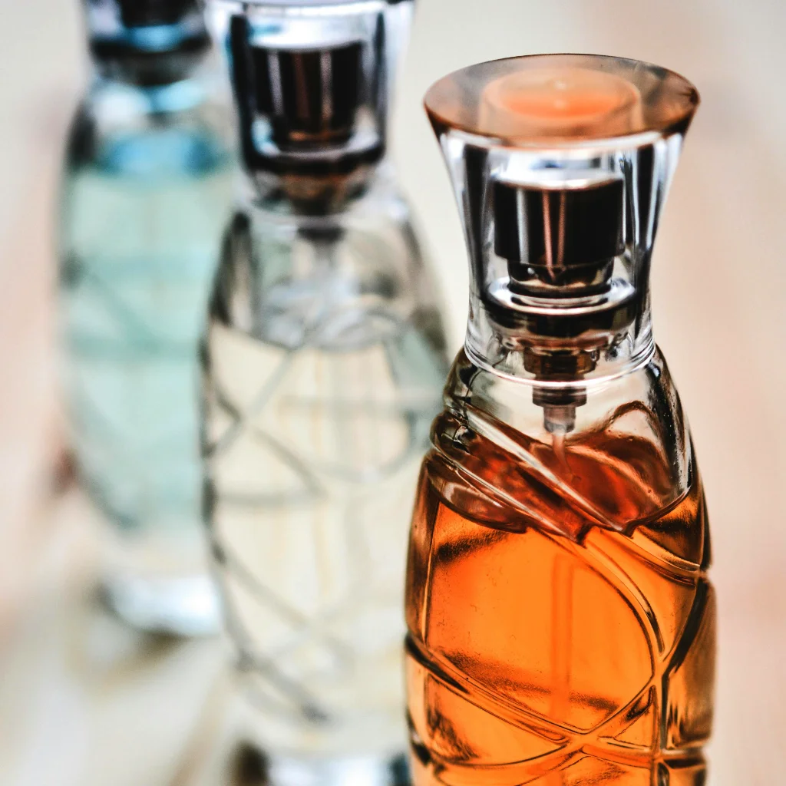
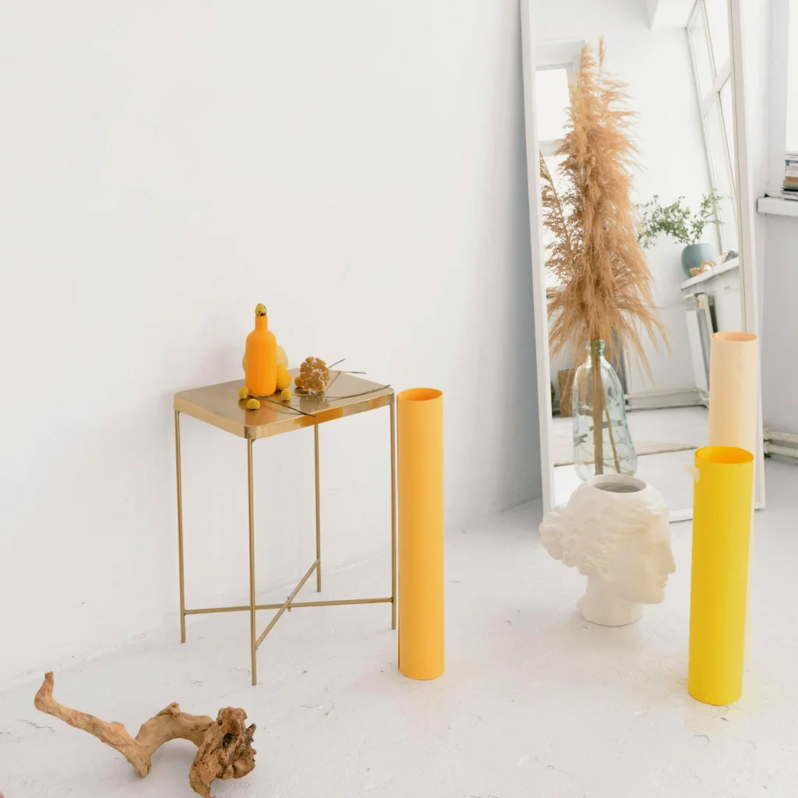
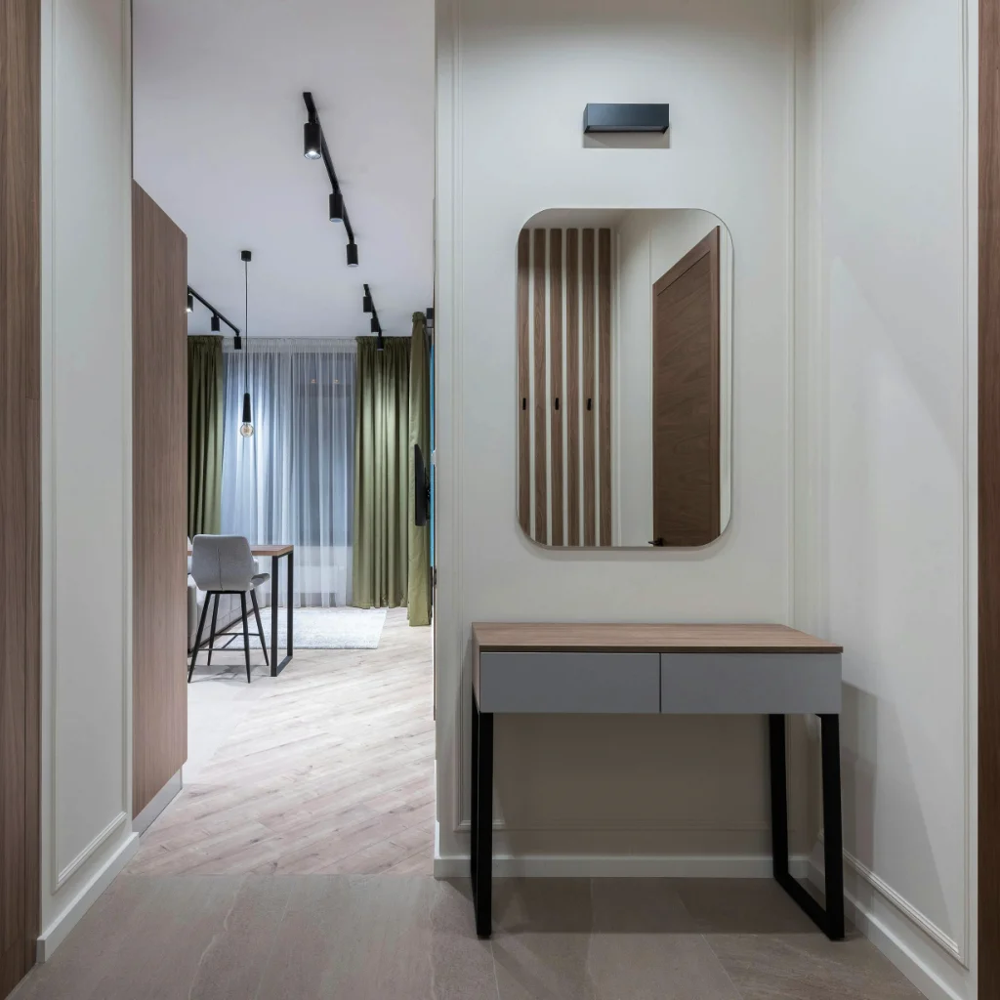

Pameran Inovasi Tahunan Mahasiswa Resmi Dibuka Hari Ini

Berita terkini, pencapaian riset, dan dinamika kehidupan akademik di lingkungan Portal Kampus

Melalui skema hibah riset terpadu, mahasiswa dan dosen dari berbagai fakultas bekerja sama merancang teknologi ramah lingkungan yang langsung diuji coba pada komunitas lokal.

 01
01
 02
02







Jelajahi kisah inspiratif dan kabar terbaru seputar aktivitas civitas academica kami